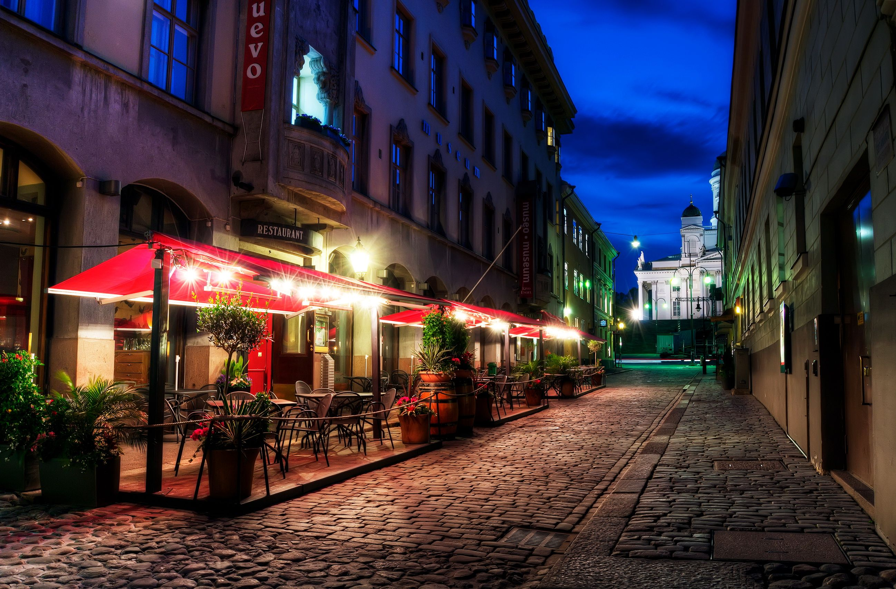
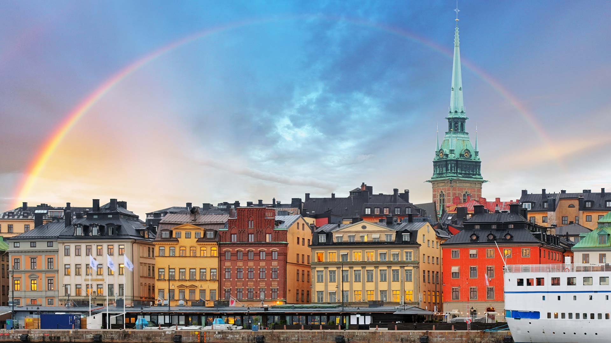

HELSINKI EVENTS
 
HELSINKI DAY
The Helsinki Day (Helsinki-päivä) will be celebrated on every June 12, with numerous entertainment events culminating in an open-air concert.Also, the Helsinki Festival is an annual arts and culture festival, which takes place every August (including the Night of the Arts).
DATE: June 12 2021
Walpurgis Night
Otherwise known as Vappu or May Day, this event coincides with the Spring Festival. Closely related to Beltane, a Celtic Festival, it resembles most May Day celebrations throughout Europe involving the crowning of statues around town and colorful carnivals. People party on the streets, have picnics and wear decorative clothing.
Also called Juhannus, the Midsummer Festival is typically held on the Saturday that falls between June 20 and 26. It celebrates the summer solstice, with most city dwellers heading to their summer cottage in the Lakeland, where plenty of drinking and bonfires take place.
DATE:20 June 2021-26 June 2021
VENUE: Lakeland